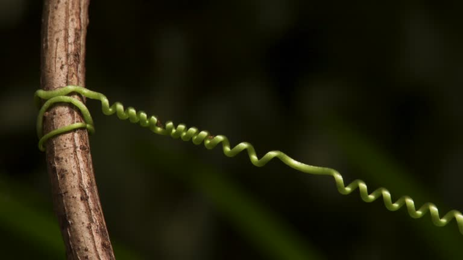
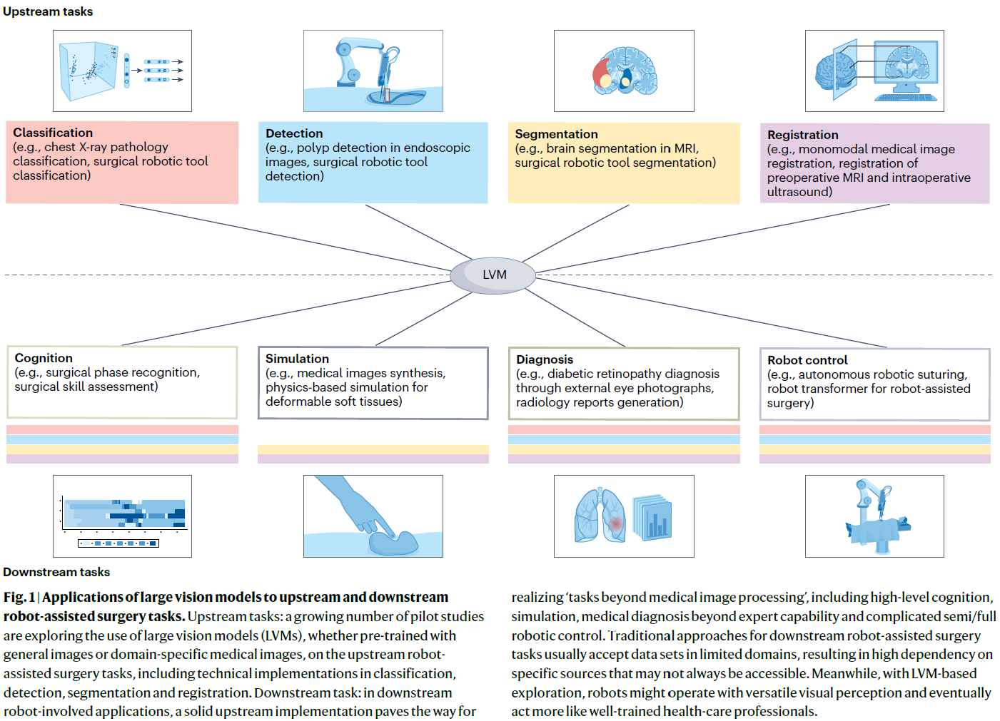
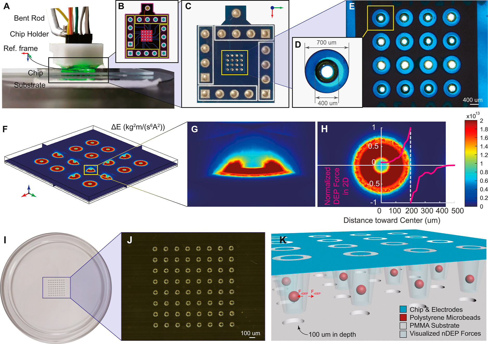

|
I'm a Research Assistant Professor from the Dept of Electronic Engineering, The Chinese University of Hong Kong (CUHK). I'm interested in flexible robots, mechatronics, robot perception, sensorimotor control, virtual environments and simulations, and robot intelligence. From 2022 to 2023, I was a Postdoctoral Fellow at CUHK working with Prof. Hongliang Ren. I did my PhD at ME@PolyU, where I was advised by Dr. Henry K. Chu and Prof. Li Cheng. SHB313 3943 4343 jiewen.lai [æ] cuhk.edu.hk |
|
[06/2025] ‚úçüèª Got GRF 2025/26. |
|
|
|  |
Twistable Soft Continuum Robots
Jiewen Lai†, Yanjun Liu†, Tian-Ao Ren, Yan Ma, Tao Zhang, Jeremy Teoh, Mark R. Cutkosky, Hongliang Ren* Journal, 2025 (Under Review) |

|
Gravity-Aware Proactive Joint-Level Compensation for Portable Soft Slender Robots Using A Single IMU and Real-Time Simulation
Jiewen Lai†, Tian-Ao Ren†, Pengfei Ye, Yanjun Liu, Jingyao Sun, Hongliang Ren* International Journal of Robotics Research (IJRR), 2026 (Accepted) tl;dr: Embodying gravity sensation in soft slender robots with a minimalist setup. |
|  |
Innovating Robot-assisted Surgery through Large Vision Models
Zhe Min†, Jiewen Lai†, Hongliang Ren* Nature Reviews Electrical Engineering, 2025 DOI Reposted by Nature Portfolio tl;dr: A Perspective in Nature Reviews Electrical Engineering discusses how large vision models can enhance vision-related tasks in robot-assisted surgery transforming ‚Äòsurgical robots‚Äô into ‚Äòrobotic surgeons.‚Äô ‚Äî Nature Portfolio |
|  |
Large-Scale Selective Micropatterning with Robotics nDEP Tweezers and Hydrogel Encapsulation
Kaicheng Huang, Jiewen Lai, Hongliang Ren, Chunhui Wu, Xing Cheng, Henry K. Chu* ACS Applied Materials & Interfaces, 2024 tl;dr: Patterning micro particles (cells) using negative dielectrophoresis (nDEP) tweezer in batches and encapsulating them into hydrogel for tissue engineering. |

|
Gesture-based Steering Framework for Redundant Soft Robots
Jiewen Lai, Bo Lu, Kaicheng Huang, Henry K. Chu* IEEE/ASME Transactions on Mechatronics (T-MECH), 2024 pdf video code tl;dr: A steering framework for redundant soft manipulators using real-time hand motion and gestures. |
|
Sim-to-Real Transfer of Soft Robotic Navigation Strategies That
Learns from the Virtual Eye-in-Hand Vision
Jiewen Lai†, Tian-Ao Ren†, Wenchao Yue, Shijian Su, Jason Chan, Hongliang Ren* IEEE Transactions on Industrial Informatics (T-II), 2023 pdf video code sofa archive tl;dr: Transferring the navigation strategy that a redundant soft robot learns from what it has seen in the SOFA-based virtual world to the real world. |
|

|
Lightweight Pneumatically Elastic Backbone Structure with Modular
Construction and Nonlinear Interaction for Soft Actuators
Yang Yang, Jiewen Lai, Chaochao Xu, Zhiguo He, Pengcheng Jiao, Hongliang Ren* Soft Robotics (SoRo), 2023 pdf videos tl;dr: Robotizing any strip-shaped balloons with mechanically programmed 3D-printed shells. |
|
Reconstructing External Force on the Circumferential Body of
Continuum Robot With Embedded Proprioceptive Sensors
Qingxiang Zhao, Jiewen Lai, Henry K. Chu* IEEE Transactions on Industrial Electronics (T-IE), 2022 pdf video tl;dr: Endowing proprioception to soft robots with embedded eGaIn vein through learning. |
|
|
Constrained Motion Planning of A Cable-Driven Soft Robot with
Compressible Curvature Modeling
Jiewen Lai, Bo Lu, Henry K. Chu* IEEE Robotics and Automation Letters (RA-L), 2022 pdf video1 video2 code tl;dr: Tip pose and whole-body motion planning of a 7-DOF soft robot in constrained environments considering the cable-driven-induced length change of its soft body. |
|
|
Variable-Stiffness Control of A Dual-Segment Soft Robot using Depth
Vision
Jiewen Lai, Bo Lu, Henry K. Chu* IEEE/ASME Transactions on Mechatronics (T-MECH), 2021 pdf video tl;dr: Controlling the soft robot's 3D motion & stiffness in real time with antagonistic cable actuation strategy based on eye-to-hand depth vision. |
|

|
Verticalized-Tip Trajectory Tracking of A 3D-Printable Soft
Continuum Robot: Enabling Surgical Blood Suction Automation
Jiewen Lai, Kaicheng Huang, Bo Lu, Qingxiang Zhao, Henry K. Chu* IEEE/ASME Transactions on Mechatronics (T-MECH), 2021 pdf video tl;dr: Configuration constraints on a redundant soft robot, with rapid IK, solved through point cloud projection and image-based liquid suction planning. |

|
Toward Vision-based Adaptive Configuring of A Bidirectional
Two-Segment Soft Continuum Manipulator
Jiewen Lai, Kaicheng Huang, Bo Lu, and Henry K. Chu* IEEE/ASME International Conference on Advanced Intelligent Mechatronics (AIM), 2020 pdf video tl;dr: Steering and servoing a two-segment soft robot's 2D pose with eye-to-hand vision in real-time - regardless of the static payload. |
|
A Learning-based Inverse Kinematics Solver for a Multi-Segment Continuum Robot in Robot-Independent Mapping
Jiewen Lai, Kaicheng Huang, and Henry K. Chu* IEEE International Conference on Robotics and Biomimetics (ROBIO), 2019 pdf code best paper finalist award tl;dr: Utilizing a lightweight MLP model to learn a redundant soft robot's IK through its simplified DH model. |
|
"CryroFR" PI, HKD 1.1M, 2026 to 2028. "Gecko-inspired variable stiffness flexible robot" Co-PI, USD 25K, 2026 to 2027. PI: Prof. Mark R. Cutkosky (Fletcher Jones Professor, Dept of Mechanical Engineering, Stanford University) "Soft Robophysical Simulation" PI, CNY 100K, 2025 to 2028. Coupled Tendon-driven Continuum Robots for R-MIS PI, CNY 300K, 2025-01 to 2027-12. Flexible Endoscopic Robots for Transluminal-Submucosal Drug Delivery PI, 2024-01 to 2025-12. "Miniature Notched Tubular Soft Robots" PI, HKD 100K, 2023-06 to 2024-12 (Completed). |
|
Senior Member, Chinese Mechanical Engineering Society (CMES) |
|
Associate Editor (AE): ICRA'26, ICRA'25, ICRA'24 |
|
ELEG4701 Intelligent Interactive Robot Practice (24'Spring, 24'Fall, 25'Fall) |
 Your local time:
Your local time: